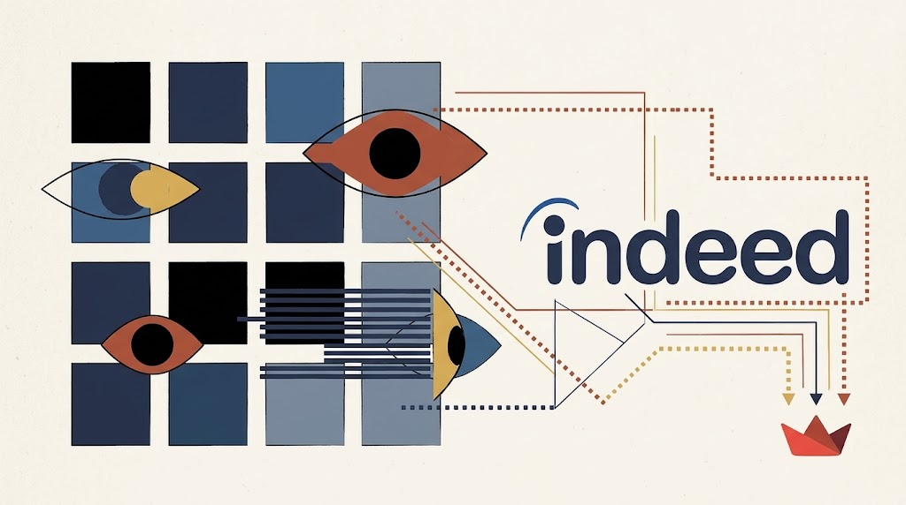
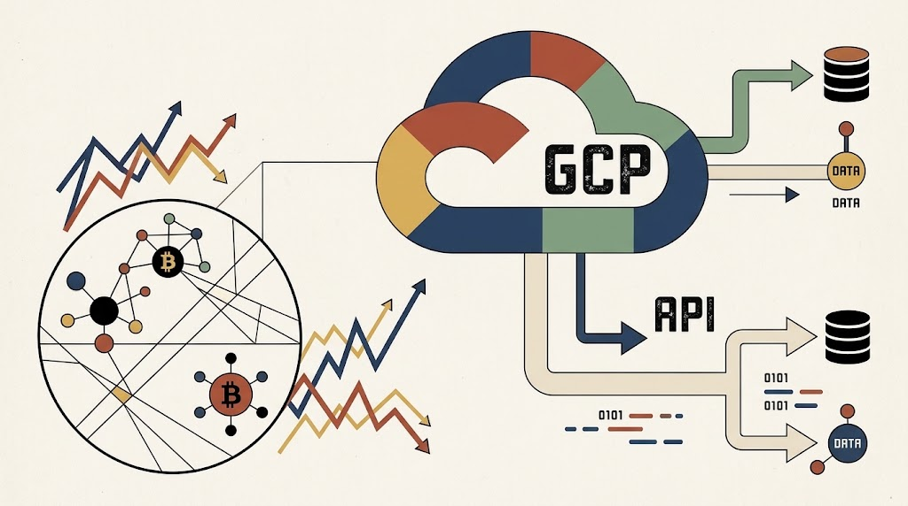
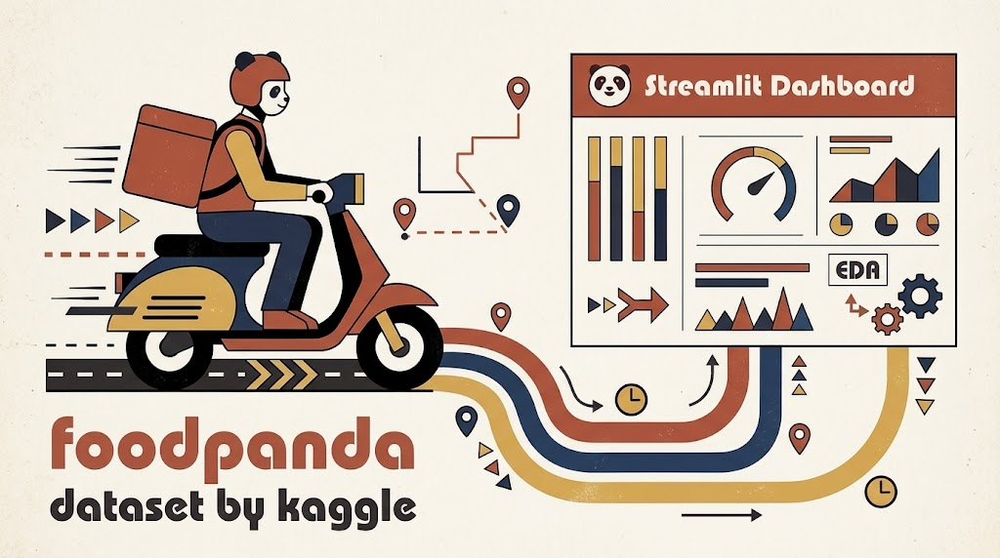

PipelineIndeed → Playwright → PostgreSQL → Streamlit
Industrial engineer (UBA). 6+ years working on data platforms, analytics and consulting projects across retail, automotive, logistics, energy, food & beverage, agriculture and farming, you name it. Curious soul all around.
On this site you'll find data projects: pipelines, analysis, dashboards and multi-cloud services. Lately playing around with AI assistants and workflow automation.


